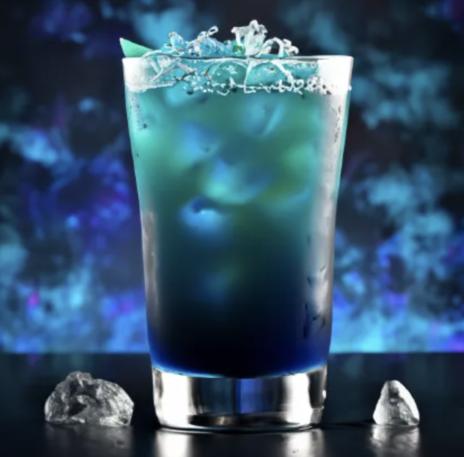

Home
Adios MF

AMF Cocktail
A beautiful blended blue cocktail that is sure to make the
quietest person the speaker of the night. This fiery drink isn't for
the weak and timid, as it lets you embrace intrusive thoughts.
Ingredients
- 1 shot of vodka
- 1 shot of gin
- 1 shot of silver tequila
- 1 shot of blue curacao
- 1 shot of sweet and sour mix
- 1/2 shot of triple sec
- 1 cup of ice
- 1 lime sliced
- 1 cup of ice
- 1/2 teaspoon of salt (optional)
Steps
- Place 4 cubes of ice in a Shaker
- Add a pinch of salt to the Shaker (optional)
- Add 2 slices of lime in the Shaker
- Fill glass with ice cubes and 3 slices of lime
- Add all remaining ingredients to the Shaker
- Thoroughly shake until frosty
- Empty the blended drink in the glass and enjoy